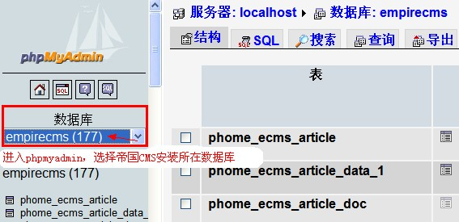

|
||
| 可查看：http://bbs.phome.net/showthread-13-118056-0.html |
运行环境有问题，使用记事本打开PHP配置文件php.ini：
设置short_open_tag = On |
| 1、增加信息提示“建立目录不成功!请检查目录权限”； 2、除了首页外，其他页面都打不开； 3、页面的CSS地址错误。 |
| “建立数据表:
phome_ecms_article 完毕...... You have an error in your SQL syntax. Check the manual that corresponds to your MySQL server version for the right syntax to use near 'DEFAULT CHARSET=gbk' at line 1” 说明：因为您空间使用的是MySQL4.0，进行安装配置数据库时，MySQL版本选择为“MySQL4.0”即可解决。 |
| /e/data/adminlogin 目录权限不可写导致，请将此目录权限设置为777权限即可解决。 |
| /e/admin 后台管理目录e/admin中的admin可以任意重命名，如改为e/MYadmin888。但e目录不可以重命名，否则将引起系统位置故障。 |
| /e/class/config.php |
| php.ini配置问题， 修改php.ini，将error_reporting = E_ALL修改成 error_reporting = E_ALL & ~E_NOTICE 即可解决。 |
| 使用MySQL数据库管理软件phpmyadmin，查看phome_enewsuser表里的记录：查看username字段的内容。 |
| 使用MySQL数据库管理软件phpmyadmin，修改数据库中的phome_enewsuser数据表进行密码重置操作： 修改phome_enewsuser表里的记录：将password字段的内容改为：“322d3fef02fc39251436cb4522d29a71”；将salt字段的内容改为：“abc”. 密码就重置为：123456  然后单击页面底部的“执行”按钮，帝国CMS后台管理员密码就重置为“123456”了。 phpmyadmin是MySQL的数据库管理工具，可访问官方网站下载：www.phpmyadmin.net |
| 查看/e/class/config.php文件里的“$do_loginauth”变量内容。 |
| 用phpmyadmin修改phome_enewsuseradd表里的记录：把“equestion”字段的内容改为0；把eanswer字段的内容改为空. 修改后登陆时则不需要安全答案，可以登陆后再修改安全答案。 |
| 可以修改e/class/config.php里的缓存，把你这个ip去掉（closeip、openip、hopenip），然后登录后台重新设置。(推荐用dreamweaver编辑，可防止UTF8编码文件被转换为GBK) |
| 你的php设置的时间有问题，是美国的时间。 以下方法可解决： 修改php.ini，找到：date.timezone，把前面的分号去掉，并把值设为PRC |
| 因为空间不支持GD库，所以验证码均为“ecms”。但不支持GD库不影响使用。 |
| 安装到“配置数据库”这步，将“内置初始数据”这个选项去掉即可。 |
1、认证码是安装时初始化管理员账号设置的验证信息，用于内部人员验证。 |
| 常见FTP软件有FlashFXP、CuteFTP、LeapFTP
等。 不同FTP软件略有差别，用户应结合自身软件情况找到“二进制”处进行设置。英文版的FTP软件，选择设置传输类型为binary(image)。 FlashFXP 软件进行二进制上传，方法是：点击“会话”――选择“传送模式”――“二进制”即可： CuteFTP 软件进行二进制上传，方法是： 在工具栏中，工具－>Global Options“全局选项”（也可以直接按 “ALT+F7”）， 在弹出来的窗口中，选择“传输”，在 传输方式 中选择“二进制”；然后选择“传输”下面的“ASCII类型”，在右边列表框中找到名为“PHP”的项目，选定后点右边的“删除”，再点下面的“确定”即可。如果“PHP”项目不存在的话，可直接使用，不需另行设置。 LeapFTP软件进行二进制上传，方法是： 点击 站点－>站点管理器，在弹出来的窗口中，选择“高级”，然后在传说模式中选择“二进制”，应用即可。 |
| 可以。 |